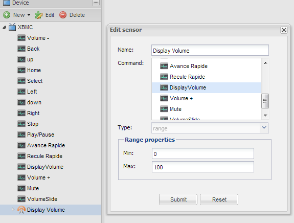
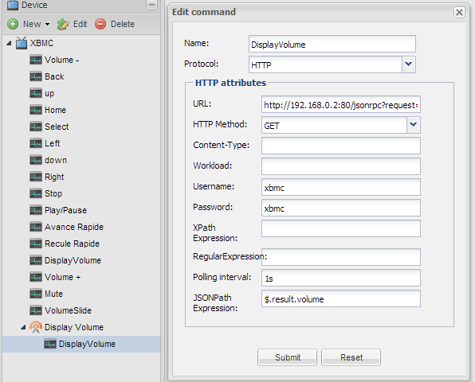
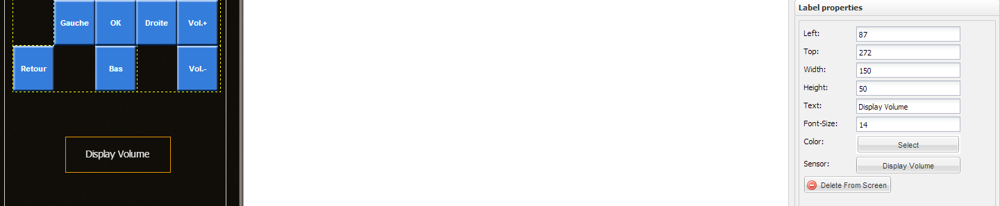

Hi,
Im new to openremote, and I am having trouble getting the current volume of my XBMC that is running on my Pc.
I have successfully got other controls such as up, down, enter etc... working. What I would ideally like to do, is to have a slider control the volume.
I set up a command called GetVolume with the following settings:
PROTOCOL: HTTP
URL: "http://192.168.0.18:8081/jsonrpc?request={"jsonrpc":"2.0","method":"Application.GetProperties","params":{"properties":["volume"]}, id": 1}
HTTP Method: GET
I then set up a sensor with selecting the above command.
Finally I set a label to use the above sensor. When I rum the remote I get a N/A displayed. However if I paste the URL used in the command into my browser I get the following response: {"id":1,"jsonrpc":"2.0","result":{"volume":53}}
Could somebody please help me with this / explain where i'm going wrong.
Many thanks
James
{kind=link}
{kind=link}
{kind=link}
|
You have to use JSONPath to extract the value from the JSON result. |
|
The Howto HTTP page has a short description of JSONPath with a link to some examples how to deal with it. |
|
Hey, I use the same command : Worload : {"jsonrpc":"2.0","method":"Application.GetProperties","params":{"properties":["volume"]},"id":"1"} this return {id:"1"jsonrpc:"2.0"result:{volume: 80}} So i use a JSONPath Expression : $.result.volume Now the resultat is : [ 80 ] But i've still N/A in my label. I hope that can help you, and let me know if you find a solution. Edit : Still figuring out this issue, i read the xbmc API and the volume propertie return an Integer value. Do you think our problem come from that? I'm looking for a way to change an integer to a string but i find nothing. Somebody have an idea? |
|
Hi I did get this working, and this is how: I created a command called GetVolume which uses the HTTP protocol, Polling time: 1s JSON path: $.result.volume Then I created a sensor called Sensor-Volume, which was a range type min:0 max:100 and the command was the GetVolume Then added a label to my device screen and set the sensor to the Sensor-Volume Hope that helps Any problems please reply James |
|
I try the same thing than you but still not working. I explain my configuration
found in this post http://www.openremote.org/display/forums/Controlling+XBMC+with+json-rpc For the field "content-type"
Everything on my computer. This is some screenshot of my config in open remote The sensor :  The command :  The lable :  The log : --------------------------------------------------------------------
DEPLOYING NEW CONTROLLER RUNTIME...
--------------------------------------------------------------------
2013-06-19 12:01:59,340 DEBUG [Controller Definition File Watcher for Default Deployer]: Created object model for Command( ID = 79, Type = http, Properties : {workload={"jsonrpc":"2.0","method":"Application.SetVolume","params":{"volume":"decrement"},"id":"1"}, username=xbmc, name=Volume -, method=POST, contentType=application/json, password=xbmc, url=http://192.168.0.2:80/jsonrpc}).
2013-06-19 12:01:59,340 DEBUG [Controller Definition File Watcher for Default Deployer]: Created object model for Command( ID = 80, Type = http, Properties : {workload={"jsonrpc": "2.0", "method": "Input.Back", "id": 1}, username=xbmc, name=Back, method=POST, contentType=application/json, password=xbmc, url=http://192.168.0.3:80/jsonrpc}).
2013-06-19 12:01:59,340 DEBUG [Controller Definition File Watcher for Default Deployer]: Created object model for Command( ID = 81, Type = http, Properties : {workload={"jsonrpc": "2.0", "method": "Input.Up", "id": 1}, username=xbmc, name=up, method=POST, contentType=application/json, password=xbmc, url=http://192.168.0.3:80/jsonrpc}).
2013-06-19 12:01:59,341 DEBUG [Controller Definition File Watcher for Default Deployer]: Created object model for Command( ID = 82, Type = http, Properties : {workload={"jsonrpc": "2.0", "method": "Input.Home", "id": 1}, username=xbmc, name=Home, method=POST, contentType=application/json, password=xbmc, url=http://192.168.0.3:80/jsonrpc}).
2013-06-19 12:01:59,341 DEBUG [Controller Definition File Watcher for Default Deployer]: Created object model for Command( ID = 83, Type = http, Properties : {workload={"jsonrpc": "2.0", "method": "Input.Select", "id": 1}, username=xbmc, name=Select, method=POST, contentType=application/json, password=xbmc, url=http://192.168.0.3:80/jsonrpc}).
2013-06-19 12:01:59,341 DEBUG [Controller Definition File Watcher for Default Deployer]: Created object model for Command( ID = 84, Type = http, Properties : {workload={"jsonrpc":"2.0","method":"Input.Left","id":1}, username=xbmc, name=Left, method=POST, contentType=application/json, password=xbmc, url=http://192.168.0.3:80/jsonrpc}).
2013-06-19 12:01:59,341 DEBUG [Controller Definition File Watcher for Default Deployer]: Created object model for Command( ID = 85, Type = http, Properties : {workload={"jsonrpc": "2.0", "method": "Input.Down", "id": 1}, username=xbmc, name=down, method=POST, contentType=application/json, password=xbmc, url=http://192.168.0.3:80/jsonrpc}).
2013-06-19 12:01:59,341 DEBUG [Controller Definition File Watcher for Default Deployer]: Created object model for Command( ID = 86, Type = http, Properties : {workload={"jsonrpc": "2.0", "method": "Input.Right", "id": 1}, username=xbmc, name=Right, method=POST, contentType=application/json, password=xbmc, url=http://192.168.0.3:80/jsonrpc}).
2013-06-19 12:01:59,341 DEBUG [Controller Definition File Watcher for Default Deployer]: Created object model for Command( ID = 87, Type = http, Properties : {workload={"jsonrpc":"2.0","id":1,"method":"Player.Stop","params":{"playerid":1},"id":1}, username=xbmc, name=Stop, method=POST, contentType=application/json, password=xbmc, url=http://192.168.0.3:80/jsonrpc}).
2013-06-19 12:01:59,343 DEBUG [Controller Definition File Watcher for Default Deployer]: Created object model for Command( ID = 88, Type = http, Properties : {workload={"jsonrpc":"2.0","method":"Player.PlayPause","params":{"playerid":1},"id":1}, username=xbmc, name=Play/Pause, method=POST, contentType=application/json, password=xbmc, url=http://192.168.0.3:80/jsonrpc}).
2013-06-19 12:01:59,343 DEBUG [Controller Definition File Watcher for Default Deployer]: Created object model for Command( ID = 89, Type = http, Properties : {workload={"jsonrpc":"2.0","id":1,"method":"Player.Seek","params":{"playerid":1,"value":"smallforward"}}, username=xbmc, name=Avance Rapide, method=POST, contentType=application/json, password=xbmc, url=http://192.168.0.3:80/jsonrpc}).
2013-06-19 12:01:59,343 DEBUG [Controller Definition File Watcher for Default Deployer]: Created object model for Command( ID = 90, Type = http, Properties : {workload={"jsonrpc":"2.0","id":1,"method":"Player.Seek","params":{"playerid":1,"value":"smallbackward"}}, username=xbmc, name=Recule Rapide, method=POST, contentType=application/json, password=xbmc, url=http://192.168.0.3:80/jsonrpc}).
2013-06-19 12:01:59,344 DEBUG [Controller Definition File Watcher for Default Deployer]: Created object model for Command( ID = 91, Type = http, Properties : {username=xbmc, name=DisplayVolume, pollingInterval=1s, method=GET, password=xbmc, url=http://192.168.0.2:80/jsonrpc?request={"jsonrpc":"2.0","method":"Application.GetProperties","params":{"properties":["volume"]},"id":1}, jsonpath=$.result.volume}).
2013-06-19 12:01:59,344 DEBUG [Controller Definition File Watcher for Default Deployer]: Created object model for Command( ID = 92, Type = http, Properties : {workload={"jsonrpc":"2.0","method":"Input.ExecuteAction","params":{"action":"volumeup"},"id":"1"}, username=xbmc, name=Volume +, method=POST, contentType=application/json, password=xbmc, url=http://192.168.0.2:80/jsonrpc}).
2013-06-19 12:01:59,344 DEBUG [Controller Definition File Watcher for Default Deployer]: Created object model for Command( ID = 93, Type = http, Properties : {workload={"jsonrpc":"2.0","method":"Application.SetMute","params":{"mute":"toggle"},"id":"1"}, username=xbmc, name=Mute, method=POST, contentType=application/json, password=xbmc, url=http://192.168.0.2/jsonrpc}).
2013-06-19 12:01:59,344 DEBUG [Controller Definition File Watcher for Default Deployer]: Created object model for Command( ID = 94, Type = http, Properties : {workload={"jsonrpc":"2.0","method":"Application.SetVolume","params":{"volume":${param}},"id":"1"}, username=xbmc, name=VolumeSlide, method=POST, contentType=application/json, password=xbmc, url=http://192.168.0.2:80/jsonrpc}).
2013-06-19 12:01:59,344 DEBUG [Controller Definition File Watcher for Default Deployer]: Initializing event processor: Drools Rule Engine
2013-06-19 12:01:59,345 INFO [Controller Definition File Watcher for Default Deployer]: No rule definitions found in 'c:\OpenRemote-Controller-2.0.2\webapps\controller\rules'.
2013-06-19 12:01:59,346 INFO [Controller Definition File Watcher for Default Deployer]: Initialized event processor : Drools Rule Engine
2013-06-19 12:01:59,347 DEBUG [Controller Definition File Watcher for Default Deployer]: Building HttGetCommand
2013-06-19 12:01:59,347 DEBUG [Controller Definition File Watcher for Default Deployer]: HttpGetCommand: username = xbmc
2013-06-19 12:01:59,347 DEBUG [Controller Definition File Watcher for Default Deployer]: HttpGetCommand: pollingInterval = 1s
2013-06-19 12:01:59,347 DEBUG [Controller Definition File Watcher for Default Deployer]: HttpGetCommand: method = GET
2013-06-19 12:01:59,347 DEBUG [Controller Definition File Watcher for Default Deployer]: HttpGetCommand: password = xbmc
2013-06-19 12:01:59,347 DEBUG [Controller Definition File Watcher for Default Deployer]: HttpGetCommand: url = http://192.168.0.2:80/jsonrpc?request={"jsonrpc":"2.0","method":"Application.GetProperties","params":{"properties":["volume"]},"id":1}
2013-06-19 12:01:59,347 DEBUG [Controller Definition File Watcher for Default Deployer]: HttpGetCommand: jsonpath = $.result.volume
2013-06-19 12:01:59,347 DEBUG [Controller Definition File Watcher for Default Deployer]: Created object model for sensor 'Display Volume' (ID = '2 641 711').
2013-06-19 12:01:59,347 INFO [Controller Definition File Watcher for Default Deployer]: Registered sensor : Range Sensor (Name = 'Display Volume', ID = '2641711', Min: 0, Max: 100)
2013-06-19 12:01:59,347 DEBUG [Controller Definition File Watcher for Default Deployer]: *** setSensor called as part of EventListener init *** sensor is: Range Sensor (Name = 'Display Volume', ID = '2641711', Min: 0, Max: 100)
2013-06-19 12:01:59,348 DEBUG [Polling thread for sensor: Display Volume]: Sensor thread started for sensor: Range Sensor (Name = 'Display Volume', ID = '2641711', Min: 0, Max: 100)
2013-06-19 12:01:59,348 INFO [Controller Definition File Watcher for Default Deployer]: Startup complete.
2013-06-19 12:01:59,348 DEBUG [Polling thread for sensor: Display Volume]: Get connection for route HttpRoute[{}->http://192.168.0.2:80]
2013-06-19 12:01:59,350 DEBUG [Polling thread for sensor: Display Volume]: CookieSpec selected: best-match
2013-06-19 12:01:59,350 DEBUG [Polling thread for sensor: Display Volume]: Attempt 1 to execute request
2013-06-19 12:01:59,350 DEBUG [Polling thread for sensor: Display Volume]: Sending request: GET /jsonrpc?request=%7B%22jsonrpc%22:%222.0%22,%22method%22:%22Application.GetProperties%22,%22params%22:%7B%22properties%22:[%22volume%22]%7D,%22id%22:1%7D HTTP/1.1
2013-06-19 12:01:59,350 DEBUG [Polling thread for sensor: Display Volume]: >> "GET /jsonrpc?request=%7B%22jsonrpc%22:%222.0%22,%22method%22:%22Application.GetProperties%22,%22params%22:%7B%22properties%22:[%22volume%22]%7D,%22id%22:1%7D HTTP/1.1[EOL]"
2013-06-19 12:01:59,350 DEBUG [Polling thread for sensor: Display Volume]: >> "User-Agent: OpenRemoteController[EOL]"
2013-06-19 12:01:59,350 DEBUG [Polling thread for sensor: Display Volume]: >> "Host: 192.168.0.2:80[EOL]"
2013-06-19 12:01:59,350 DEBUG [Polling thread for sensor: Display Volume]: >> "Connection: Keep-Alive[EOL]"
2013-06-19 12:01:59,350 DEBUG [Polling thread for sensor: Display Volume]: >> "[EOL]"
2013-06-19 12:01:59,350 DEBUG [Polling thread for sensor: Display Volume]: >> GET /jsonrpc?request=%7B%22jsonrpc%22:%222.0%22,%22method%22:%22Application.GetProperties%22,%22params%22:%7B%22properties%22:[%22volume%22]%7D,%22id%22:1%7D HTTP/1.1
2013-06-19 12:01:59,350 DEBUG [Polling thread for sensor: Display Volume]: >> User-Agent: OpenRemoteController
2013-06-19 12:01:59,350 DEBUG [Polling thread for sensor: Display Volume]: >> Host: 192.168.0.2:80
2013-06-19 12:01:59,350 DEBUG [Polling thread for sensor: Display Volume]: >> Connection: Keep-Alive
2013-06-19 12:01:59,351 DEBUG [Polling thread for sensor: Display Volume]: << "HTTP/1.1 401 Unauthorized[EOL]"
2013-06-19 12:01:59,351 DEBUG [Polling thread for sensor: Display Volume]: << "Content-Length: 0[EOL]"
2013-06-19 12:01:59,351 DEBUG [Polling thread for sensor: Display Volume]: << "Connection: close[EOL]"
2013-06-19 12:01:59,351 DEBUG [Polling thread for sensor: Display Volume]: << "WWW-Authenticate: Basic realm=XBMC[EOL]"
2013-06-19 12:01:59,351 DEBUG [Polling thread for sensor: Display Volume]: << "Date: Wed, 19 Jun 2013 10:01:59 GMT[EOL]"
2013-06-19 12:01:59,351 DEBUG [Polling thread for sensor: Display Volume]: << "[EOL]"
2013-06-19 12:01:59,351 DEBUG [Polling thread for sensor: Display Volume]: Receiving response: HTTP/1.1 401 Unauthorized
2013-06-19 12:01:59,351 DEBUG [Polling thread for sensor: Display Volume]: << HTTP/1.1 401 Unauthorized
2013-06-19 12:01:59,351 DEBUG [Polling thread for sensor: Display Volume]: << Content-Length: 0
2013-06-19 12:01:59,351 DEBUG [Polling thread for sensor: Display Volume]: << Connection: close
2013-06-19 12:01:59,351 DEBUG [Polling thread for sensor: Display Volume]: << WWW-Authenticate: Basic realm=XBMC
2013-06-19 12:01:59,351 DEBUG [Polling thread for sensor: Display Volume]: << Date: Wed, 19 Jun 2013 10:01:59 GMT
2013-06-19 12:01:59,351 DEBUG [Polling thread for sensor: Display Volume]: Target requested authentication
2013-06-19 12:01:59,351 DEBUG [Polling thread for sensor: Display Volume]: Authentication schemes in the order of preference: [ntlm, digest, basic]
2013-06-19 12:01:59,351 DEBUG [Polling thread for sensor: Display Volume]: Challenge for ntlm authentication scheme not available
2013-06-19 12:01:59,351 DEBUG [Polling thread for sensor: Display Volume]: Challenge for digest authentication scheme not available
2013-06-19 12:01:59,351 DEBUG [Polling thread for sensor: Display Volume]: basic authentication scheme selected
2013-06-19 12:01:59,351 DEBUG [Polling thread for sensor: Display Volume]: Authorization challenge processed
2013-06-19 12:01:59,351 DEBUG [Polling thread for sensor: Display Volume]: Authentication scope: BASIC 'XBMC'@192.168.0.2:80
2013-06-19 12:01:59,351 DEBUG [Polling thread for sensor: Display Volume]: Found credentials
2013-06-19 12:01:59,351 DEBUG [Polling thread for sensor: Display Volume]: Connection closed
2013-06-19 12:01:59,353 DEBUG [Polling thread for sensor: Display Volume]: CookieSpec selected: best-match
2013-06-19 12:01:59,353 DEBUG [Polling thread for sensor: Display Volume]: Attempt 2 to execute request
2013-06-19 12:01:59,353 DEBUG [Polling thread for sensor: Display Volume]: Sending request: GET /jsonrpc?request=%7B%22jsonrpc%22:%222.0%22,%22method%22:%22Application.GetProperties%22,%22params%22:%7B%22properties%22:[%22volume%22]%7D,%22id%22:1%7D HTTP/1.1
2013-06-19 12:01:59,353 DEBUG [Polling thread for sensor: Display Volume]: >> "GET /jsonrpc?request=%7B%22jsonrpc%22:%222.0%22,%22method%22:%22Application.GetProperties%22,%22params%22:%7B%22properties%22:[%22volume%22]%7D,%22id%22:1%7D HTTP/1.1[EOL]"
2013-06-19 12:01:59,353 DEBUG [Polling thread for sensor: Display Volume]: >> "User-Agent: OpenRemoteController[EOL]"
2013-06-19 12:01:59,353 DEBUG [Polling thread for sensor: Display Volume]: >> "Host: 192.168.0.2:80[EOL]"
2013-06-19 12:01:59,353 DEBUG [Polling thread for sensor: Display Volume]: >> "Connection: Keep-Alive[EOL]"
2013-06-19 12:01:59,353 DEBUG [Polling thread for sensor: Display Volume]: >> "Authorization: Basic eGJtYzp4Ym1j[EOL]"
2013-06-19 12:01:59,353 DEBUG [Polling thread for sensor: Display Volume]: >> "[EOL]"
2013-06-19 12:01:59,353 DEBUG [Polling thread for sensor: Display Volume]: >> GET /jsonrpc?request=%7B%22jsonrpc%22:%222.0%22,%22method%22:%22Application.GetProperties%22,%22params%22:%7B%22properties%22:[%22volume%22]%7D,%22id%22:1%7D HTTP/1.1
2013-06-19 12:01:59,353 DEBUG [Polling thread for sensor: Display Volume]: >> User-Agent: OpenRemoteController
2013-06-19 12:01:59,353 DEBUG [Polling thread for sensor: Display Volume]: >> Host: 192.168.0.2:80
2013-06-19 12:01:59,353 DEBUG [Polling thread for sensor: Display Volume]: >> Connection: Keep-Alive
2013-06-19 12:01:59,353 DEBUG [Polling thread for sensor: Display Volume]: >> Authorization: Basic eGJtYzp4Ym1j
2013-06-19 12:01:59,354 DEBUG [Polling thread for sensor: Display Volume]: << "HTTP/1.1 200 OK[EOL]"
2013-06-19 12:01:59,354 DEBUG [Polling thread for sensor: Display Volume]: << "Content-Length: 47[EOL]"
2013-06-19 12:01:59,354 DEBUG [Polling thread for sensor: Display Volume]: << "Content-Type: application/json[EOL]"
2013-06-19 12:01:59,354 DEBUG [Polling thread for sensor: Display Volume]: << "Date: Wed, 19 Jun 2013 10:01:59 GMT[EOL]"
2013-06-19 12:01:59,354 DEBUG [Polling thread for sensor: Display Volume]: << "[EOL]"
2013-06-19 12:01:59,354 DEBUG [Polling thread for sensor: Display Volume]: Receiving response: HTTP/1.1 200 OK
2013-06-19 12:01:59,354 DEBUG [Polling thread for sensor: Display Volume]: << HTTP/1.1 200 OK
2013-06-19 12:01:59,354 DEBUG [Polling thread for sensor: Display Volume]: << Content-Length: 47
2013-06-19 12:01:59,354 DEBUG [Polling thread for sensor: Display Volume]: << Content-Type: application/json
2013-06-19 12:01:59,354 DEBUG [Polling thread for sensor: Display Volume]: << Date: Wed, 19 Jun 2013 10:01:59 GMT
2013-06-19 12:01:59,354 DEBUG [Polling thread for sensor: Display Volume]: Connection can be kept alive indefinitely
2013-06-19 12:01:59,354 DEBUG [Polling thread for sensor: Display Volume]: << "{"id":1,"jsonrpc":"2.0","result":{"volume":33}}"
2013-06-19 12:01:59,354 DEBUG [Polling thread for sensor: Display Volume]: Releasing connection org.apache.http.impl.conn.SingleClientConnManager$ConnAdapter@2a3f0cf8
2013-06-19 12:01:59,355 INFO [Polling thread for sensor: Display Volume]: received message: {"id":1,"jsonrpc":"2.0","result":{"volume":33}}
2013-06-19 12:03:13,729 INFO [HTTP-Thread-64]: Start RoundRobin group member REST service. at 2013-06-19 12:03:13
2013-06-19 12:03:13,885 INFO [HTTP-Thread-71]: Querying changed state from ChangedStatus table...
2013-06-19 12:03:13,885 INFO [HTTP-Thread-71]: Not Found: [device => 351710050375525, sensorIDs => 2641711] in ChangedStatus table.
2013-06-19 12:03:13,885 INFO [HTTP-Thread-71]: DEVICEID:351710050375525 sensorID:[2641711]statusChangedSensorID:[]Waiting...
2013-06-19 12:03:14,231 INFO [HTTP-Thread-64]: Finished RoundRobin group member REST service. at 2013-06-19 12:03:14
In the log i can the resultat of an received message, but on my phone still N/A. Where is the problem? |
|
You may need to update to 2.1 snapshot to get all the required HTTP functionality in the controller for this to work. Please download from http://download.openremote.org |
|
Yeah!! It's working!!! Thank You!! I can continu my experimentation. Now it's a seek bar. |